VISUAL COMPUTING · 그래픽스 · 시뮬레이션 · 비전 · XR
현실의 움직임을
가상으로 옮기고,
다시 현실로 돌려줍니다
화면 너머의 세계가 진짜처럼 느껴지려면 무엇이 필요할까. 그 질문을 따라 컴퓨터그래픽스와 시뮬레이션, 비전을 공부했고, 지금은 실제 움직임과 가상의 세계를 잇는 프로젝트들을 하고 있습니다.
진행 중 반려견 보행 물리 시뮬레이션 졸업논문 / 쿼레이트 CoSpace 1인 개발
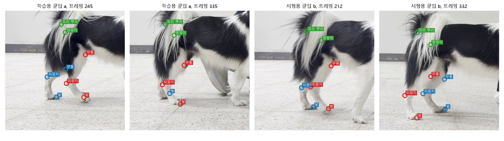
2026 – 진행 중 · 졸업논문
영상으로 보정한 반려견 물리 모델과 슬개골 탈구 보행
반려견 레오의 영상으로 물리 모델을 맞추고, 슬개골 탈구 등급별 무릎 한계를 넣었을 때 보행이 어떻게 바뀌는지 임상 측정값과 비교합니다.

2022 · KCGS 우수발표상 · 논문지 게재
외부 자력으로 움직이는 촉수 애니메트로닉스
몸 안에 모터를 넣지 않고, 바깥 전자석의 힘만으로 유연한 촉수 구조를 움직이게 한 연구입니다.

2025 · KCGS 2025 포스터 · AI 군중 시뮬레이션
군중 시뮬레이션 연구
밀도에 따라 스스로 움직이는 울타리로 7000명 대피 시간을 24.6% 줄인 연구와, 군중 사이에 감정이 퍼지는 과정을 시뮬레이션한 연구입니다.

2024 · HCI 창의상 우수상 · 제1저자
XR 테이크아웃 카페
가상 카페의 AI 점원에게 말로 주문하면, 실제 커피머신에서 커피가 나오는 대화형 XR 공간입니다.
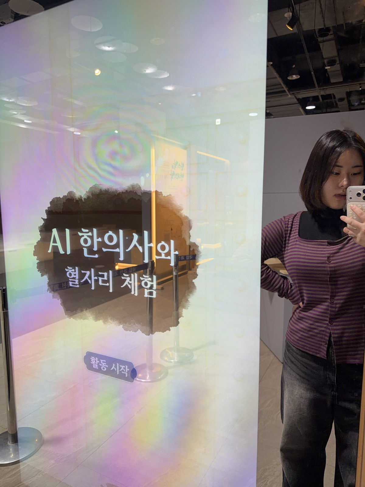
2025 · 박물관 전시
AI 한의사와 혈자리 체험
AI 한의사에게 불편한 증상을 고르면, 몸을 실시간으로 추적해 맞는 혈자리를 찾아 주는 체험입니다. 국립과천과학관에 전시됐습니다.
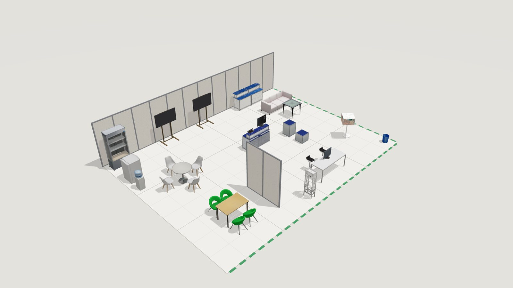
2026 – · 쿼레이트
CoSpace 공간 배치 시각화
가구부터 공장 라인, 전시 부스, 선박 내부까지 3D로 배치해 보는 공간 시각화 도구입니다.
2024 – 2025 · LUL 창립작 · 팀장
산군
조선시대를 배경으로 한 미스터리 방탈출 어드벤처입니다. 직접 만든 팀 LUL의 10명과 함께 만든 첫 작품입니다.
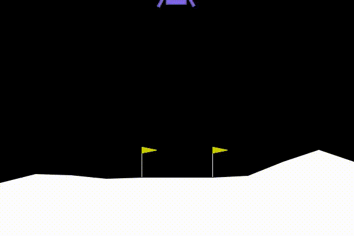
2023 · 컴퓨터그래픽스와 딥러닝
메쉬 피팅 · DQN 강화학습
구를 고양이·거미 모양으로 바꾸는 메쉬 최적화와, 달 착륙선을 DQN으로 착륙시키는 실험입니다.
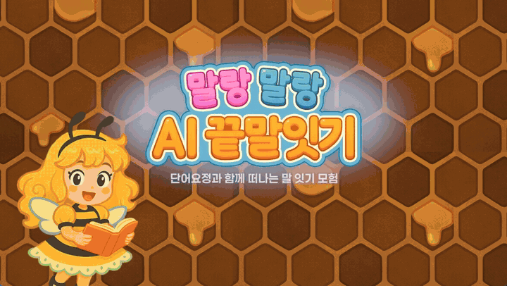
2025 · 학술연구 우수상 · 단독 개발
AI와 끝말잇기
단어 요정 ‘마리’와 끝말잇기를 주고받는 대화형 단어 게임입니다. 이 작업을 정리한 논문으로 학술연구 우수상을 받았습니다.
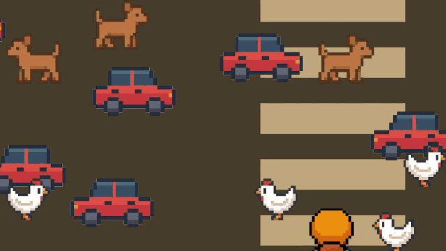
2025 · 디지털콘텐츠 이노베이션 페스티벌 우수상 · C++ · SDL2
Code:Black
상용 엔진 없이 C++와 SDL2로 렌더링부터 충돌까지 만든 2D 액션 어드벤처입니다.
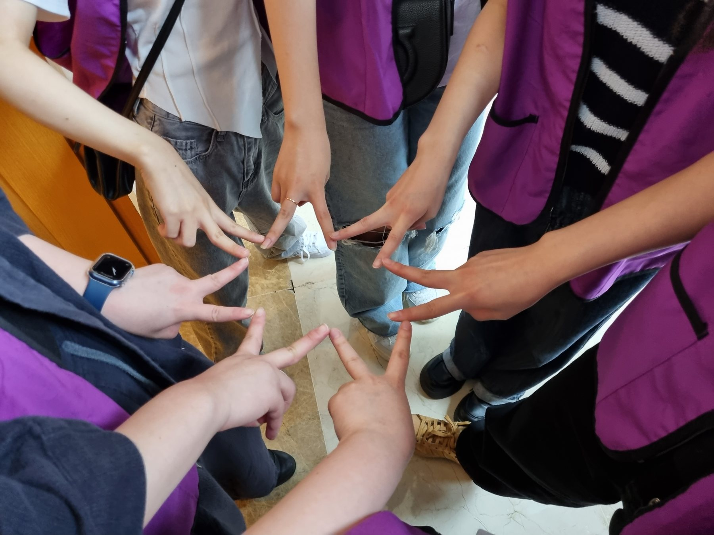
2024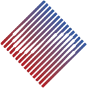
SIGGRAPH Asia 2024 도쿄 · 학생 자원봉사자(SV) 선발전시 · 등록 · 체험 부스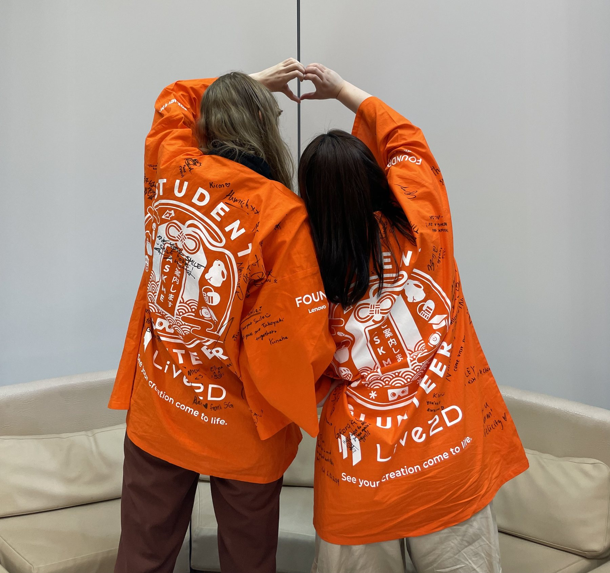
2022SIGGRAPH Asia 2022 대구 · 학생 자원봉사자(SV) 선발학회 운영 · 참가자 지원 2024G-STAR 2024 학과 탐방대탐방대
2024G-STAR 2024 학과 탐방대탐방대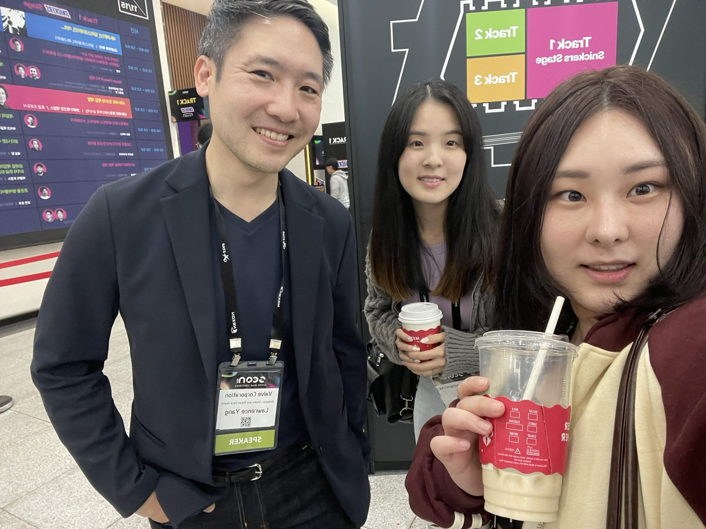
2024게임 개발 팀 LUL(Level Up Labs) 창립창립 · 팀 리드2021 – 2023라온S 회장 · 학과 공식 소모임회장 · 지원사업 기획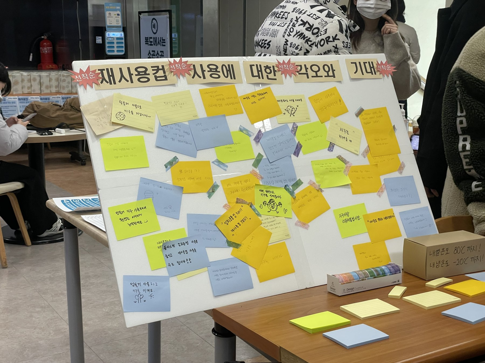
2021서포터즈 · 기자단 활동 (아리스토텔러스 · KOREA FESTA · 엔닷라이트)최우수활동상 · 한국 문화 · 메타버스 2021 – 2022
2021 – 2022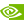
교육 · 수료 · 자격디지털리터러시 자격 · NVIDIA DLI · AR/VR 기획 등 2025 – 2026GDGoC CUK · DevRel 팀 리더 (운영진)운영진 · 행사 기획 · 스터디
2025 – 2026GDGoC CUK · DevRel 팀 리더 (운영진)운영진 · 행사 기획 · 스터디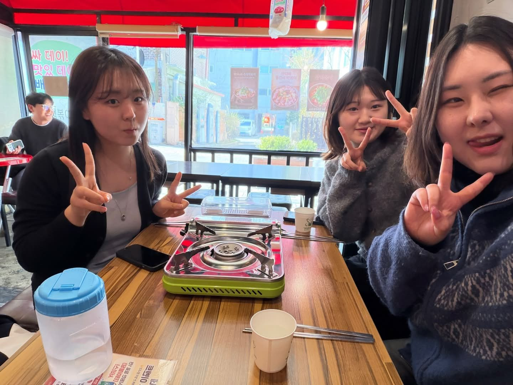
색채학
색의 기본 성질부터 색 체계, 퍼스널 컬러, 트렌드 컬러 기획까지.
Fashion Illustration패션 일러스트레이션
인체의 비례와 구조, 옷이 몸 위에 걸리는 모습을 그리는 법.
CADCAD 공간 설계
명동 애플스토어를 분석해 도면과 프레젠테이션 보드를 만들었습니다.
Drafting & Spatial Studies제도와 공간 연구
가상 공간을 만들기 위해 시작한 제도 공부.
Storyboard & Animatics스토리보드와 애니매틱스
영상 제작의 프리프로덕션: 기획, 스토리보드, 애니매틱스.
Maya & HoudiniMaya 및 Houdini
모델링, 셰이딩, 스크립팅, 이펙트, 렌더링 파이프라인.
Unreal & UnityUnreal 및 Unity
두 게임 엔진을 모두 씁니다. Unreal은 블루프린트를 공부했습니다.
연락

연구·협업 제안과 채용 문의 모두 환영합니다.